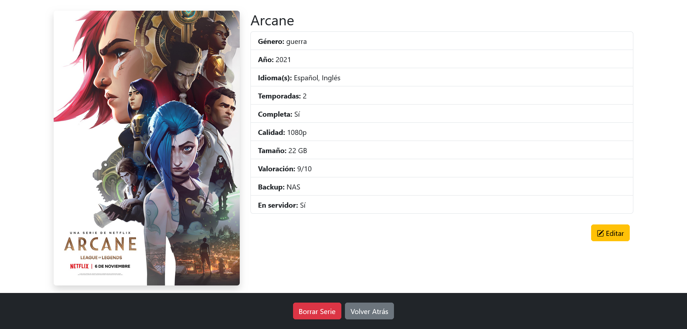

Exposición de la web
¿Cómo funciona cada página?
Página de bienvenida
Esto es lo que un usuario ve cuando abre la página, un título que reza "La mejor forma de organizar tus películas y series", junto a una imagen de fondo de cómo se ve el apartado de películas ya en funcionamiento (el estilo visual de series es muy similar), y un botón de "Comienza ahora" que lo que hace es redirigir al formulario de inicio de sesión.
Bajando un poco hay algunos detalles que quise recalcar de la aplicación, como el hecho de que es fácil de usar y que además cuenta con un diseño responsivo (que se adapta a diferentes tamaños de pantalla).
Justo debajo se encuentra el título "Pruébala cuando gustes" junto con el botón que redirige al formulario de creación de cuenta, que además no tiene coste.

Como siempre puede existir algún problema del que no me haya percatado, tengo este pequeño apartado que invita a reportar un problema si algo no funciona bien (lo explicaré en detalle más adelante).
Ya por último, como pie de página, está mi nombre de usuario en Github que es un enlace al repositorio de este proyecto, donde cualquiera puede ver el código y las modificaciones que se han ido haciendo.
Reportar problema
Antes de desarrollar esta página de gestión de películas, desarrollé una que es una lista de videojuegos pendientes y cómo organizarlos para no acumular una lista infinita de títulos.
Esa aplicación cuenta con una función para reportar errores, consistente en:
- El usuario selecciona el tipo de error (error con su cuenta, error con la web, otro...).
- El usuario escribe su correo electrónico.
- El usuario detalla el error y le da al botón de enviar.
Quería que la aplicación de gestión multimedia contara con algo similar, por eso decidí reutilizar el componente como estaba y, para este caso, le añadí la posibilidad de adjuntar una captura de pantalla por parte del usuario.
Una vez el usuario pulsa el botón de enviar (suponiendo que no hay un error de validación), la aplicación usa una librería llamada "PHPMailer" para enviar un correo electrónico a una cuenta secundaria:
Regístrate gratis
Este es un formulario sencillo con los siguientes campos:
- Nombre de usuario (obligatorio).
- Correo electrónico (obligatorio).
- Contraseña (obligatorio).
- Repetir la contraseña (obligatorio).
- Foto de perfil (opcional).
Suponiendo que no hay errores de validación (como que los campos de las contraseñas no coincidan o el usuario haya dejado vacío un campo obligatorio), la aplicación redirige automáticamente a la vista de películas:
En caso de ya contar con una cuenta, se ofrece un botón que redirige al formulario de inicio de sesión.
Iniciar sesión
Este formulario solicita el nombre de usuario y la contraseña para poder iniciar sesión. Tras hacer las comprobaciones y comprobar que las credenciales coinciden, la aplicación redirige a la vista de películas del usuario.
En caso de no contar con una cuenta, se ofrece un enlace que redirige al formulario de creación.
¿Y si he olvidado mi contraseña?
No te preocupes, existe un sistema de recuperación de contraseña:
Lo único que hay que hacer es escribir el correo del usuario y, si existe un usuario registrado con ese correo, debería aparecer el siguiente mensaje:
La recuperación de contraseña funciona de la siguiente manera:
- El usuario escribe su correo.
- El usuario pulsa el botón de "Recuperar contraseña".
- La aplicación genera una nueva contraseña de manera aleatoria.
- La aplicación actualiza la contraseña del usuario con la nueva generada.
- La nueva contraseña generada se envía por correo usando PHPMailer.
¿Y si he olvidado mi nombre de usuario?
No te preocupes, existe un sistema de "recuperación" de nombre de usuario:
Sí, la vista es una copia del sistema de recuperación de contraseña. La diferencia es que se ha suprimido la parte de envío de correo electrónico y cualquier referencia a "contraseñas".
El funcionamiento aquí es bastante más simple, el usuario escribe su correo electrónico y, si existe una cuenta con ese correo, se devuelve el nombre de usuario:
Ante la pregunta de si esta forma de resolverlo puede suponer un problema de seguridad, lo pongo muy en duda.
La aplicación únicamente devuelve el nombre de usuario cuyo correo ha sido comprobado y solamente el nombre de usuario. Además de que está el hecho de que a día de hoy entras a cualquier red social y puedes ver el nombre de usuario de cualquier persona en esa aplicación.
Tener el nombre de usuario pero no la contraseña sirve de poco, y si el usuario tiene activada la verificación en 2 pasos, menos todavía.
Vista de películas
Como se ha visto antes, con una cuenta recién creada, lo que aparece en la vista es una invitación a añadir películas (el funcionamiento se explicará más adelante), un enlace para la vista de series (que mostrará un mensaje similar), y enlaces al perfil y a cerrar sesión. Además de una especificación de que el usuario se encuentra en la vista de películas y su nombre.
En caso de ser un usuario con películas añadidas, la vista será algo como esto:
Cuando un usuario añade películas, lo que muestra la vista principal es:
- El poster de la película.
- El nombre de la película.
- Un botón para ver detalles.
Además de los enlaces a otras partes de la aplicación, esta vista cuenta con 2 buscadores, uno para buscar películas por su nombre y otro para buscar películas por su director:
El tipo de buscador se alterna con el botón que se encuentra al lado de la barra de búsqueda, el cual cambia el texto dependiendo del buscador al que se va a seleccionar.
Ambos buscadores funcionan de la siguiente manera: cada vez que el usuario escribe una letra, mediante código Javascript se comprueban los nombres, a los que coinciden no se les hace nada, a los que no coinciden se les aplica un "display: none".
Esto es un ejemplo de buscar una película por su nombre:
Esto es un ejemplo de buscar películas por nombre de su director:
Añadir una película
Es un formulario con los campos (algunos opcionales) para los datos de una película.
Hay algunos campos aquí que podrían ser confusos así que voy a explicar que, al menos en España (según la información que he encontrado), no es ilegal extraer su contenido para realizar una copia de seguridad de uso personal:
- Idiomas: Una película en un DVD puede contener varios idiomas (como Español e Inglés).
- Tamaño: Al extraer el archivo de la película, este ocupa un tamaño en el dispositivo de destino.
- Calidad: No todos los formatos de disco guardan en la misma calidad, por norma general un Bluray suele tener mejor calidad que un DVD convencional.
- ¿En servidor?Existen aplicaciones como "Plex media server" o "Jellyfin" (entre otras), que permiten a un dispositivo actuar como una especie de "netflix casero". El objetivo de esta pregunta es que, si el usuario cuenta con este software y tiene la película añadida, lo especifique.
- Backup: En caso de haber realizado una copia de seguridad de la película, especificar dónde se encuentra (nube, disco duro, etc...).
Tras introducir todos los datos (al menos los obligatorios) en el formulario, si no se ha producido ningún error de validación, la aplicación mostrará un mensaje de éxito y después llevará a la vista de películas, donde ya se encuentra la nueva añadida.
Ver detalles de una película
Cuando el usuario desee ver información detallada sobre la película, simplemente tiene que pulsar en el botón "Detalles" de dicha película, y se abrirá una página como esta:
Aquí se mostrará toda la información introducida en el formulario de inserción con una vista más agradable y sin tener que saturar la vista de todas las películas con tarjetas excesivamente grandes y llenas de información.
Entre las opciones el usuario se encuentra con:
- La posibilidad de volver atrás.
- La posibilidad de eliminar la película (se mostrará una alerta de confirmación).
- La posibilidad de editar una película.
Editar una película
El formulario de edición es muy similar al de inserción, cuenta con algunas diferencias:
- Rellena automáticamente los campos con los valores ya existentes en caso de que no se produzcan cambios.
- El cambio de póster es opcional, de no realizarse, se conserva la imagen introducida anteriormente (de hecho el formulario muestra el póster actual).
Al igual que el formulario de inserción, cuenta con un sistema de validación que compruebe que los campos obligatorios no estén vacíos, los campos numéricos no tengan valores alfabéticos, etc...
Vista de series
La vista de series sigue una estructura muy similar a la de películas, con algunas ligeras diferencias:
- El buscador por director ha sido cambiado por un buscador de series completas.
- En la esquina superior derecha, se especifica al usuario que se encuentra en la vista de series.
El buscador de series completas es como un "interruptor", cuando el usuario lo selecciona, busca todas las series que no estén completas y les aplica un "display: none":

El buscador de series por nombre funciona exactamente igual al de películas.
Añadir una serie
La estructura de añadir una serie es muy similar a la de añadir una película, se diferencian en que:
- El campo del director ha sido suprimido.
- El campo de la sinopsis ha sido suprimido.
- Se añade un campo para indicar el número de temporadas de la serie.
- Se añade un campo para especificar si la serie está completa (ejemplo: existen 2 temporadas pero hay 5 prometidas, no estaría completa).
Ver detalles de una serie
Sigue el mismo estilo visual que el "ver detalles" de una película, la única diferencia está en los campos mencionados anteriormente.
El comportamiento también es igual, un aviso de confirmación si se va a borrar y un enlace al formulario de edición.
Editar una serie
El comportamiento es igual al de películas:
- Se rellenan los campos con los valores ya existentes.
- Se realizan varias validaciones.
- Si no hay ningún problema, mensaje que indica que todo ha salido bien y la aplicación regresa a la vista de series.
Para un usuario con una cuenta recién creada, al igual que en la vista de películas, aparecería una invitación a añadir una serie. Esto sucede si no tienes series/películas independientemente del tiempo que lleve existiendo la cuenta.
Gestión del perfil del usuario
A la configuración del perfil se puede acceder:
- Pulsando la foto de perfil que aparece en la esquina superior izquierda en las vistas generales.
- Pulsando el enlace que reza "mi perfil" que aparece en la esquina inferior izquierda en las vistas generales.
En esta vista hay varias cosas a destacar:
- Posibilidad de cambiar datos de la cuenta.
- Botones para volver atrás, cerrar sesión o borrar la cuenta.
- Especificación de la página "Flaticon", que cuenta con algunos iconos que se han usado en esta aplicación.
Configuración del perfil
En la configuración del perfil el usuario puede realizar 3 acciones:
- Cambiar su foto de perfil.
- Cambiar su nombre de usuario.
- Cambiar su correo electrónico.
A excepción del cambio de foto de perfil, los otros cambios pedirán introducir la contraseña actual del usuario por motivos de seguridad: Se necesita el nombre de usuario para iniciar sesión y el correo electrónico para restablecer la contraseña y recibir el código de la verificación en 2 pasos.
Seguridad
En el apartado de seguridad el usuario puede realizar 2 acciones:
- Cambiar su contraseña (tendrá que introducir su contraseña actual).
- Activar/Desactivar la verificación en 2 pasos.
¿Cómo funciona la verificación en 2 pasos?
Si el usuario tiene activada la verificación en 2 pasos, al momento de iniciar sesión ocurrirá lo siguiente:
- Por un lado, se generará de forma aleatoria un código de 6 dígitos con una duración de 5 minutos que se le enviará por correo.
- Por otro lado, se le llevará a una página "diferente" para introducir dicho código.
El funcionamiento de esta parte es sencillo:
-
El usuario introduce el código que ha recibido.
- Si el código es correcto, inicia sesión.
- Si el código es incorrecto, sale un mensaje de error específico y no inicia sesión.
- Si el código ha caducado, sale un mensaje de error específico y no inicia sesión.
En caso de que el código haya caducado, será necesario introducir de nuevo el nombre de usuario y la contraseña.
Considero que 5 minutos es el tiempo ideal para que un usuario tenga margen a introducirlo por si el correo tardara en llegar, y por otro lado evitar que ese código sea válido por mucho tiempo para dificultar accesos ilícitos.
Resto de la vista mi perfil
Un botón para volver a la biblioteca, redirige a la vista de películas.
Un botón para borrar cuenta, muestra una alerta de confirmación indicando que no hay marcha atrás si se procede. Debido a varios factores no se ha implementado, pero existe la intención de implementar una confirmación más robusta para borrar una cuenta, incluyendo el escribir la contraseña del usuario como uno de los pasos.
Un botón para cerrar sesión, también es posible hacerlo desde las vistas generales.
Especificación de que se han usado iconos de la página "Flaticon" en esta aplicación.